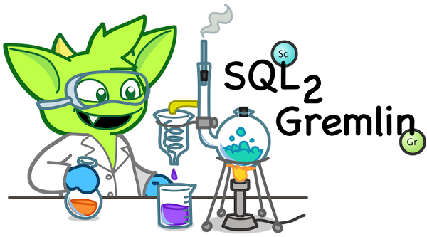

Introduction
SQL2Gremlin guides you through typical SQL concepts and shows how to do the same in Gremlin. The format of the Gremlin results will not necessarily match the format of the SQL results. Gremlin will often have better ways to structure your results, SQL can only give you tabular data.
The provided Gremlin queries will not necessarily show the optimal way to query the appropriate data. Instead SQL2Gremlin shall show you different Gremlin query concepts. If you have slow queries and need to know a better solution, don't hesitate to ask in the Gremlin-users group.
The SQL samples will make use of T-SQL syntax. MySQL users might not know some of the concepts (e.g. paging), but should at least be able to understand the queries. The point is, that SQL2Gremlin is not made to teach SQL. You should just focus on each queries short description and the corresponding Gremlin part.
TODO: link http://gremlin.tinkerpop.com TODO: Northwind blabla. Provide NorthwindFactory.groovy (g = NorthwindFactory.createGraph())
Select
Select all
This sample shows how to query all categories.
SQL
SELECT *
FROM CategoriesGremlin
g.V('type','category')References:
Select single column
This sample shows how to query the names of all categories.
SQL
SELECT CategoryName
FROM CategoriesGremlin
g.V('type','category').categoryNameReferences:
Select multiple columns
This sample shows how to query the IDs and names of all categories.
SQL
SELECT CategoryID, CategoryName
FROM CategoriesGremlin
g.V('type','category').transform({
[ 'id' : it.getProperty('categoryId')
, 'name' : it.getProperty('categoryName') ]
}).categoryNameReferences:
Select calculated column
This sample shows how to query the length of the name of all categories.
SQL
SELECT LENGTH(CategoryName)
FROM CategoriesGremlin
g.V('type','category').categoryName.transform({it.length()})References:
Select distinct values
This sample shows how to query all distinct lengths of category names.
SQL
SELECT DISTINCT LENGTH(CategoryName)
FROM CategoriesGremlin
g.V('type','category').categoryName.transform({it.length()}).dedup()References:
Select scalar value
This sample shows how to query the length of the longest category name.
SQL
SELECT MAX(LENGTH(CategoryName))
FROM CategoriesGremlin
g.V('type','category').categoryName.transform({it.length()}).max()References:
Filtering
Filter by equality
This sample shows how to query all products having no unit in stock.
SQL
SELECT *
FROM Products
WHERE UnitsInStock = 0Gremlin
g.V('type','product').has('unitsInStock', 0)References:
Filter by inequality
This sample shows how to query all products with a unit price not exceeding 10.
SQL
SELECT *
FROM Products
WHERE NOT(UnitPrice > 10)Gremlin
g.V('type','product').hasNot('unitPrice', T.gt, 10f)References:
Filter by value range
This sample shows how to query all products with a minimum price of 5 and maximum price below 10.
SQL
SELECT *
FROM Products
WHERE UnitPrice >= 5 AND UnitPrice < 10Gremlin
g.V('type','product').interval('unitPrice', 5f, 10f)References:
Ordering
Order by value ascending
This sample shows how to query all products ordered by unit price.
SQL
SELECT *
FROM Products
ORDER BY UnitPrice ASCGremlin
g.V('type','product').order({
it.a.getProperty('unitPrice') <=> it.b.getProperty('unitPrice')
})References:
Order by value descending
This sample shows how to query all products ordered by descending unit price.
SQL
SELECT *
FROM Products
ORDER BY UnitPrice DESCGremlin
g.V('type','product').order({
it.b.getProperty('unitPrice') <=> it.a.getProperty('unitPrice')
})References:
Paging
Limit number of results
This sample shows how to query the first 5 products ordered by unit price.
SQL
SELECT TOP (5) *
FROM Products
ORDER BY UnitPriceGremlin
g.V('type','product').order({
it.b.getProperty('unitPrice') <=> it.a.getProperty('unitPrice')
})[0..<5]References:
- Gremlin vertex iterator
- Gremlin order step
- Gremlin property access
- Gremlin range filter
- Groovy spaceship operator
Paged result set
This sample shows how to query the next 5 products (page 2) ordered by unit price.
SQL
SELECT Products.*
FROM (SELECT ROW_NUMBER()
OVER (
ORDER BY UnitPrice) AS [ROW_NUMBER],
ProductID
FROM Products) AS SortedProducts
INNER JOIN Products
ON Products.ProductID = SortedProducts.ProductID
WHERE [ROW_NUMBER] BETWEEN 6 AND 10
ORDER BY [ROW_NUMBER]Gremlin
g.V('type','product').order({
it.b.getProperty('unitPrice') <=> it.a.getProperty('unitPrice')
})[5..<10]References:
- Gremlin vertex iterator
- Gremlin order step
- Gremlin property access
- Gremlin range filter
- Groovy spaceship operator
Grouping
Group by value
This sample shows how to determine the most used unit price.
SQL
SELECT TOP(1) UnitPrice
FROM (SELECT Products.UnitPrice,
COUNT(*) AS [Count]
FROM Products
GROUP BY Products.UnitPrice) AS T
ORDER BY [Count] DESCGremlin
g.V('type','product').property('unitPrice').groupCount().cap() \
.orderMap(T.decr).next()References:
- Gremlin vertex iterator
- Gremlin groupCount step
- Gremlin cap step
- Gremlin orderMap step
- Gremlin next method
Joining
Inner join
This sample shows how to query all products from a specific category.
SQL
SELECT Products.*
FROM Products
INNER JOIN Categories
ON Categories.CategoryID = Products.CategoryID
WHERE Categories.CategoryName = 'Beverages'Gremlin
g.V('categoryName','Beverages').in('inCategory')References:
Left join
This sample shows how to count the number of orders for each customer.
SQL
SELECT Customers.CustomerID, COUNT(Orders.OrderID)
FROM Customers
LEFT JOIN Orders
ON Orders.CustomerID = Customers.CustomerID
GROUP BY Customers.CustomerIDGremlin
g.V('type','customer').transform({
[ 'customerId' : it.getProperty('customerId')
, 'orders' : it.out('ordered').count() ]
})References:
- Gremlin vertex iterator
- Gremlin transform step
- Gremlin property access
- Gremlin out step
- Gremlin count
CTE
Recursive query
This sample shows how to query all employees, their supervisors and their hierarchy level depending on where the employee is located in the supervisor chain.
SQL
WITH EmployeeHierarchy (EmployeeID,
LastName,
FirstName,
ReportsTo,
HierarchyLevel) AS
(
SELECT EmployeeID
, LastName
, FirstName
, ReportsTo
, 1 as HierarchyLevel
FROM Employees
WHERE ReportsTo IS NULL
UNION ALL
SELECT e.EmployeeID
, e.LastName
, e.FirstName
, e.ReportsTo
, eh.HierarchyLevel + 1 AS HierarchyLevel
FROM Employees e
INNER JOIN EmployeeHierarchy eh
ON e.ReportsTo = eh.EmployeeID
)
SELECT *
FROM EmployeeHierarchy
ORDER BY HierarchyLevel, LastName, FirstNameGremlin (hierarchical)
boss = g.V('type','employee').filter({
!it.out('reportsTo').hasNext()
}).next(); \
Tree.createTree(boss, boss.as('employee') \
.in('reportsTo').loop('employee'){true}{true}.tree().cap().next())You can also produce the same tabular result that's produced by SQL.
Gremlin (tabular)
r = []; t = { e, l ->
[ 'employeeId' : e.employeeId
, 'lastname' : e.lastname
, 'firstname' : e.firstname
, 'reportsTo' : l > 1 ? e.out('reportsTo').next().employeeId : null
, 'hierarchyLevel' : l ]
}; \
g.V('type','employee').filter({ !it.out('reportsTo').hasNext() }) \
.sideEffect({ r << t(it, 1) }).as('boss').in('reportsTo').loop('boss', {
r << t(it.object, it.loops)
true
}).iterate(); rReferences:
- Gremlin vertex iterator
- Gremlin filter step
- Gremlin out step
- Gremlin sideEffect step
- Gremlin as step
- Gremlin in step
- Gremlin loop step
- Gremlin iterate
- Groovy left shift
Complex
Pivots
This sample shows how to determine the average total order value per month for each customer.
SQL
SELECT Customers.CompanyName,
COALESCE([1], 0) AS [Jan],
COALESCE([2], 0) AS [Feb],
COALESCE([3], 0) AS [Mar],
COALESCE([4], 0) AS [Apr],
COALESCE([5], 0) AS [May],
COALESCE([6], 0) AS [Jun],
COALESCE([7], 0) AS [Jul],
COALESCE([8], 0) AS [Aug],
COALESCE([9], 0) AS [Sep],
COALESCE([10], 0) AS [Oct],
COALESCE([11], 0) AS [Nov],
COALESCE([12], 0) AS [Dec]
FROM (SELECT Orders.CustomerID,
MONTH(Orders.OrderDate) AS [Month],
SUM([Order Details].UnitPrice * [Order Details].Quantity) AS Total
FROM Orders
INNER JOIN [Order Details]
ON [Order Details].OrderID = Orders.OrderID
GROUP BY Orders.CustomerID,
MONTH(Orders.OrderDate)) o
PIVOT (AVG(Total) FOR [Month] IN ([1],
[2],
[3],
[4],
[5],
[6],
[7],
[8],
[9],
[10],
[11],
[12])) AS [Pivot]
INNER JOIN Customers
ON Customers.CustomerID = [Pivot].CustomerID
ORDER BY Customers.CompanyNameGremlin
monthNames = ['Jan', 'Feb', 'Mar', 'Apr', 'May', 'Jun', 'Jul', 'Aug', 'Sep', 'Oct', 'Nov', 'Dec']; \
rowTotal = { it.getProperty('unitPrice') * it.getProperty('quantity') }; \
g.V('type','customer') \
.order({ it.a.getProperty('customerId') <=> it.b.getProperty('customerId') }) \
.filter({ it.out('ordered').hasNext() }).transform({
m = [:]
t = ['customerId':it.getProperty('customerId')]
it.out('ordered').groupBy(m,
{it.getProperty('orderDate').getMonth()},
{it.out('contains').transform(rowTotal).sum()}).iterate()
(0..11).each({
t.put(monthNames[it], m.containsKey(it) ? m[it].mean().round(2) : 0f)
})
t
})References:
- Gremlin vertex iterator
- Gremlin order step
- Gremlin property access
- Gremlin filter step
- Gremlin out step
- Gremlin transform step
- Gremlin groupBy step
Recommendation
This sample shows how to recommend 5 products for a specific customer. The products are chosen as follows:
- determine what the customer has already ordered
- determine who else ordered the same products
- determine what others also ordered
- determine products which were not already ordered by the initial customer, but ordered by the others
- rank products by occurence in other orders
SQL
SELECT TOP (5) [t14].[ProductName]
FROM (SELECT COUNT(*) AS [value],
[t13].[ProductName]
FROM [customers] AS [t0]
CROSS APPLY (SELECT [t9].[ProductName]
FROM [orders] AS [t1]
CROSS JOIN [order details] AS [t2]
INNER JOIN [products] AS [t3]
ON [t3].[ProductID] = [t2].[ProductID]
CROSS JOIN [order details] AS [t4]
INNER JOIN [orders] AS [t5]
ON [t5].[OrderID] = [t4].[OrderID]
LEFT JOIN [customers] AS [t6]
ON [t6].[CustomerID] = [t5].[CustomerID]
CROSS JOIN ([orders] AS [t7]
CROSS JOIN [order details] AS [t8]
INNER JOIN [products] AS [t9]
ON [t9].[ProductID] = [t8].[ProductID])
WHERE NOT EXISTS(SELECT NULL AS [EMPTY]
FROM [orders] AS [t10]
CROSS JOIN [order details] AS [t11]
INNER JOIN [products] AS [t12]
ON [t12].[ProductID] = [t11].[ProductID]
WHERE [t9].[ProductID] = [t12].[ProductID]
AND [t10].[CustomerID] = [t0].[CustomerID]
AND [t11].[OrderID] = [t10].[OrderID])
AND [t6].[CustomerID] <> [t0].[CustomerID]
AND [t1].[CustomerID] = [t0].[CustomerID]
AND [t2].[OrderID] = [t1].[OrderID]
AND [t4].[ProductID] = [t3].[ProductID]
AND [t7].[CustomerID] = [t6].[CustomerID]
AND [t8].[OrderID] = [t7].[OrderID]) AS [t13]
WHERE [t0].[CustomerID] = N'ALFKI'
GROUP BY [t13].[ProductName]) AS [t14]
ORDER BY [t14].[value] DESCGremlin
g.V('customerId','ALFKI').as('customer') \
.out('ordered').out('contains').out('is').as('products') \
.in('is').in('contains').in('ordered').except('customer') \
.out('ordered').out('contains').out('is').except('products') \
.groupCount().cap().orderMap(T.decr)[0..<5].productNameReferences: